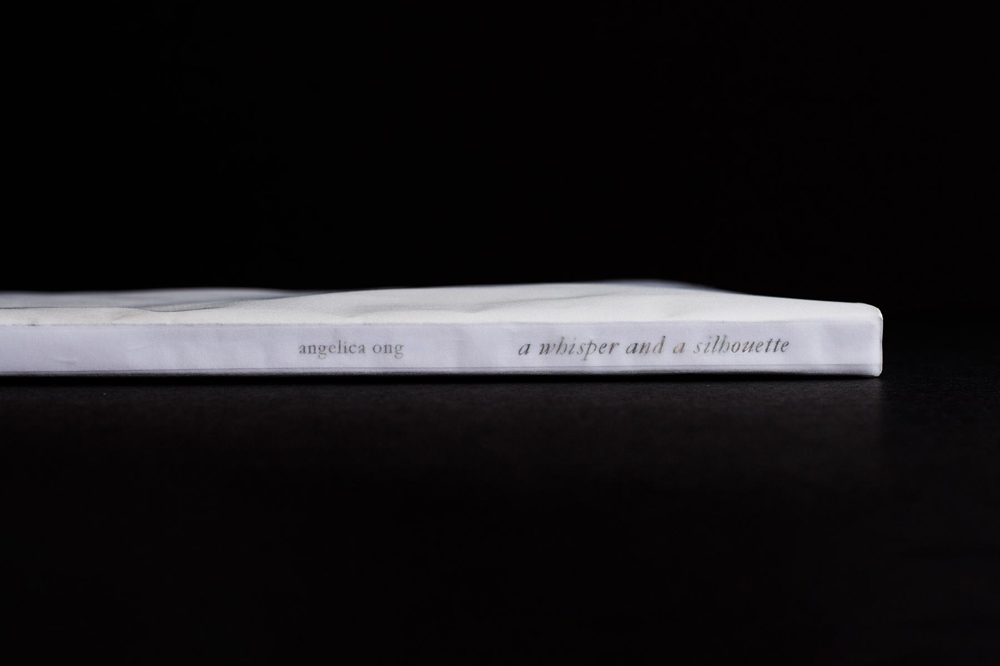
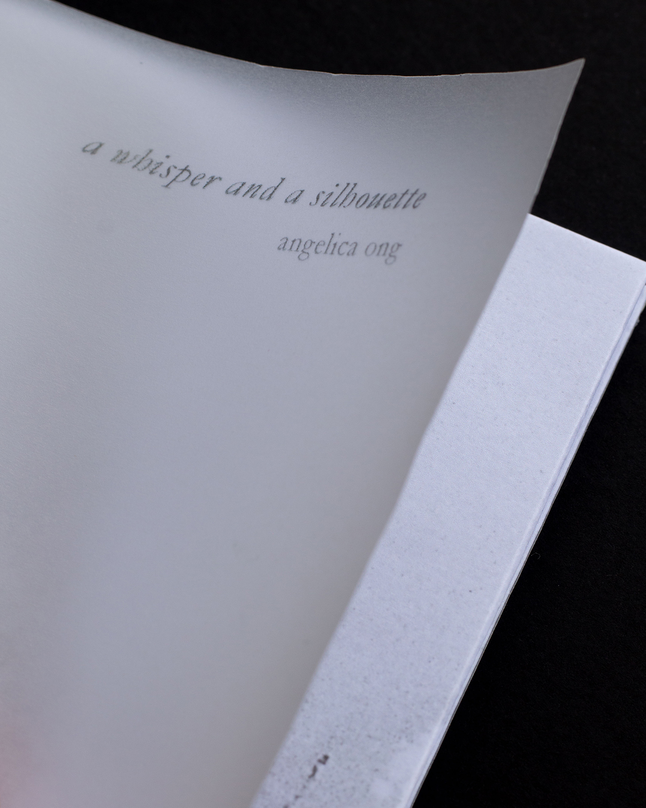

×
×
×

×

×
cutting breath unto air. 2022. Handbound. 22.1 x 25.7 x 2.4 cm. (8 11/16 x 10 1/8 x 15/16 in). Vellum, book cloth, book board, cotton paper, and decorative paper.
cutting breath unto air is a combination of a ziggurat-fold book and a Japanese-bound book (stab binding). It is a book of haikus about haikus. I wanted to convey the experience offered by Japanese haikus in tangible form to audiences who do not speak Japanese. This book translates through demonstration.
The smaller inner book communicates features of Japanese haikus that I am drawn to, one being kireji (切れ字), which translates literally to 'cutting word'. Kireji are verbal exclamations that punctuate and emphasise the end of a haiku section. Masterful use of kireji creates an intuitive literary rhythm that very naturally 'cuts space' in the haiku.
The spiral shape of the ziggurat book takes inspiration from one specific haiku, which is the first one on the strip: 巻貝の渦ゆきわたる冬銀河 (makigai no uzu yukiwataru fuyu ginga). Written by 花谷和子 (HANATANI Kazuko), this haiku can be roughly translated to 'conch shell’s / spiralling / winter galaxy', likening the spiral of a conch shell to that of the Milky Way.
cutting breath unto air is the precursor to「俳句の箱庭」(Garden of Haikus), marking the beginning of my investigation of language and its operations through the book form.